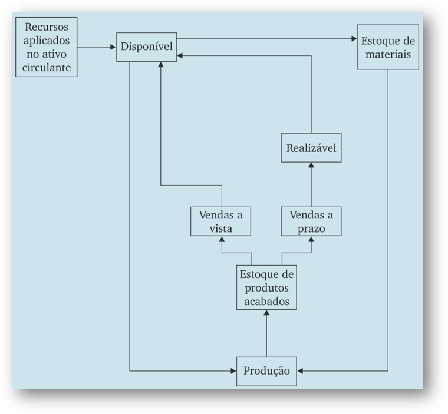
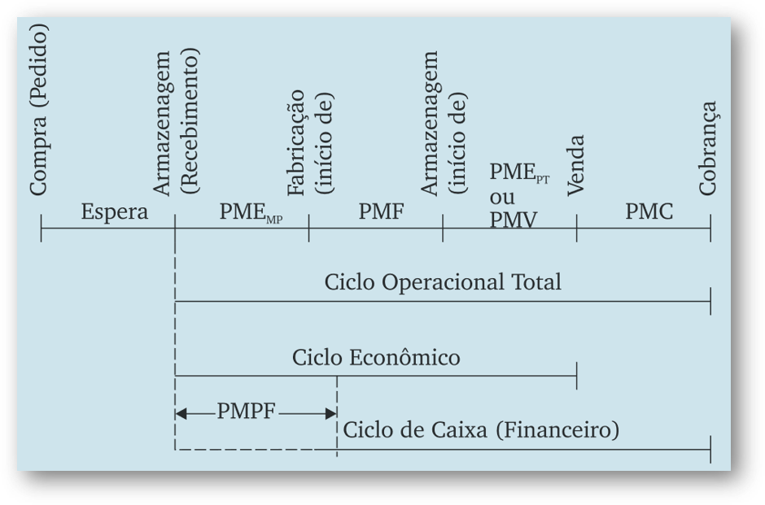
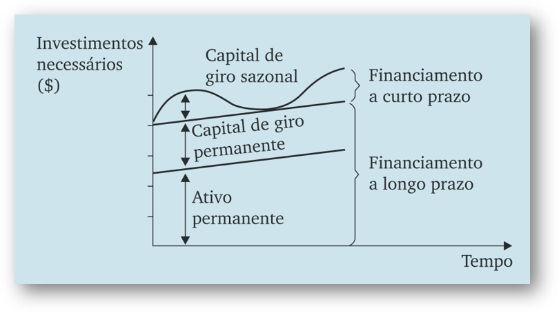
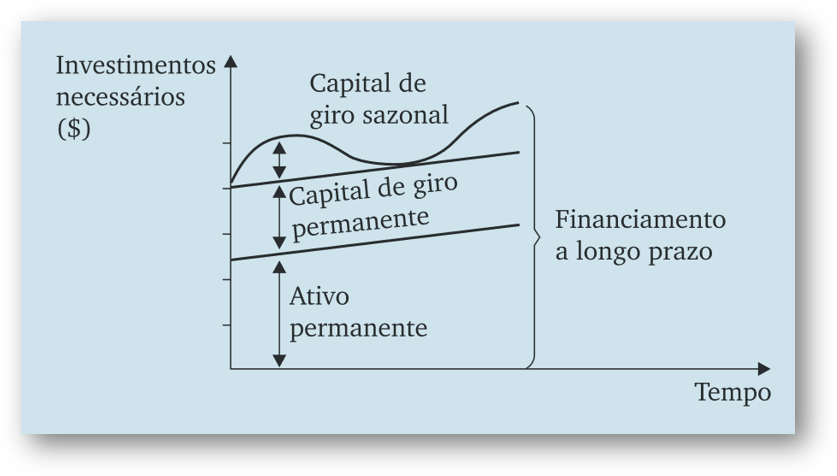

A administração do capital de giro envolve basicamente as decisões de compra e venda tomadas pela empresa, assim como suas atividades operacionais e financeiras
Deve garantir a adequada consecução da política de:
A importância do capital de giro varia em função de:
Definição: Representa o valor total dos recursos demandados pela empresa para financiar seu ciclo operacional
Características: O fluxo do ativo circulante ocorre de maneira ininterrupta na atividade operacional
Grau de volatilidade: Explicado pela curta duração de seus elementos e constante mutação dos itens circulantes
O fluxo do ativo circulante é cíclico e contínuo, passando por todas as etapas operacionais da empresa.

Definição: Representa o valor líquido das aplicações (deduzidas das dívidas a curto prazo) processadas no ativo circulante
Fórmula: CCL = \text{Ativo Circulante} - \text{Passivo Circulante}
Significado: - Evidencia a parcela do financiamento total de longo prazo que excede as aplicações também de longo prazo
Definição: Volume de recursos próprios que a empresa tem aplicado em seu ativo circulante - Reflete recursos do passivo de longo prazo alocados em itens ativos não permanentes
Cálculo: CGP = \text{Patrimônio Líquido} - \text{Aplicações Permanentes}
Definição: Atividades de produção de bens e serviços e a realização de vendas e respectivos recebimentos realizadas de forma sequencial e repetitiva
Sequência: 1. Aquisição das matérias-primas 2. Armazenagem 3. Produção 4. Venda 5. Efetivo recebimento das vendas
Objetivo: Obter lucro para remunerar credores e proprietários
PMEMP: Prazo Médio de Estocagem de Matérias-Primas
PMF: Prazo Médio de Fabricação
PMEPA ou PMV: Prazo Médio de Vendas
PMR ou PMC: Prazo Médio de Recebimento/Cobrança
PMP ou PMPF: Prazo Médio de Pagamento a Fornecedores

Ciclo Operacional Total: Composto de todas as fases operacionais da empresa \text{CO} = PME_{MP} + PMF + PMV + PMC = PME + PMR
Ciclo Econômico: Engloba toda a base de produção da empresa \text{CE} = PME_{MP} + PMF + PMV
Ciclo Financeiro (de Caixa): Identifica a necessidade de recursos da empresa \text{CC} = (PME_{MP} + PMF + PMV + PMC) - PMPF = CO - PMP
PME (Prazo Médio de Estoques): PME = \frac{\text{Estoque Médio}}{\text{CMV}} \times 365
PMR (Prazo Médio de Recebimento): PMR = \frac{\text{Contas a Receber Médio}}{\text{Vendas Líquidas}} \times 365
PMR (Prazo Médio de Pagamento): PMP = \frac{\text{Contas a Pagar Médio}}{\text{CMV}} \times 365
Objetivo: Sustentação da atividade operacional da empresa
Características: Capital de giro é composto por valores depreciáveis perante a inflação - Constitui-se no grupo patrimonial menos rentável
Princípio: O ativo circulante deve conter valores mínimos ou exatamente iguais às necessidades operacionais da empresa
Estratégia Conservadora: Diminui o risco mediante aplicações em capital de giro maiores para um mesmo nível de produção e vendas
Estratégias Média e Agressiva: Progressivas reduções no circulante - Eleva o risco mas também incrementa a rentabilidade - Menor participação relativa de itens menos rentáveis
Níveis de Aplicações em Capital de Giro
| BAIXO | MÉDIO | ALTO | |
|---|---|---|---|
| Ativo circulante | $ 800.000 | $ 1.100.000 | $ 1.400.000 |
| Ativo não circulante | $ 1.200.000 | $ 1.200.000 | $ 1.200.000 |
| Total | $ 2.000.000 | $ 2.300.000 | $ 2.600.000 |
| Passivo circulante | $ 400.000 | $ 460.000 | $ 520.000 |
| Passivo não circulante | $ 600.000 | $ 690.000 | $ 780.000 |
| Patrimônio líquido | $ 1.000.000 | $ 1.150.000 | $ 1.300.000 |
Análise de Rentabilidade
| BAIXA | MÉDIA | ALTA | |
|---|---|---|---|
| Lucro Op. Bruto | $ 1.000.000 | $ 1.000.000 | $ 1.000.000 |
| Desp. Financeiras: | |||
| Passivo Circulante | 15% x 400.000 = (60.000) | 15% x 460.000 = (69.000) | 15% x 520.000 = (78.000) |
| PNC | 20% x 600.000 = (120.000) | 20% x 690.000 = (138.000) | 20% x 780.000 = (156.000) |
| Lucro antes do IR | $ 820.000 | $ 793.000 | $ 766.000 |
| IR (40%) | (328.000) | (317.200) | (306.400) |
| Lucro Líquido | $ 492.000 | $ 475.800 | $ 459.600 |
| ROE | 49,2% | 41,4% | 35,4% |
Conclusão: Quanto maior a participação do capital de giro sobre o ativo total, menor será a rentabilidade da empresa.
Ao adotar uma postura de maior risco, com menores aplicações no capital de giro, a empresa consegue auferir retorno maior
O dilema risco-retorno da administração do capital de giro pode ser enfocado em função da participação dos investimentos circulantes em relação ao ativo total
Regra Geral: Custo de crédito a longo prazo é mais caro que o de curto prazo
Fatores: Remunerar expectativas de flutuações nas taxas de juros por um tempo maior
Para miminizar:
Aspectos de pós-fixação dos juros
Políticas mais rigorosas de exigências de garantias
Custo mais alto para crédito de curto prazo pode ocorrer devido a:
Exemplo histórico: Brasil nas décadas de 80 e 90
RISCO:
Capital de Giro Permanente (Fixo):
Capital de Giro Sazonal (Variável):
Determinado pelas variações temporárias que ocorrem normalmente nos negócios
Investimento cíclico que se repete periodicamente
Exemplos: - Maiores vendas em determinados períodos do ano - Grandes aquisições de estoques na entressafra
Princípio: Ativo não circulante e capital de giro permanente são financiados por recursos de longo prazo (próprios ou de terceiros) e Capital de giro sazonal é financiado por recursos de curto prazo

Princípio: A empresa encontra-se totalmente financiada por recursos permanentes (longo prazo), inclusive em suas necessidades sazonais de fundos: Abordagem mais conservadora

Definição: Reflete o volume de recursos demandado pelo ciclo operacional da empresa, determinado em função das políticas de: Compras, Vendas e Estocagem
Características: É uma necessidade de capital de longo prazo, que deve lastrear os investimentos cíclicos em capital de giro
Regra:
Condições:
| Ativo | Valor | Passivo e Patrimônio Líquido | Valor |
|---|---|---|---|
| Ativo circulante | $ 20.000 | Passivo circulante | $ 10.000 |
| Caixa | $ 2.000 | Exigível a longo prazo | $ 20.000 |
| Valores a receber | $ 10.000 | Patrimônio líquido | $ 20.000 |
| Estoques | $ 8.000 | ||
| Ativo permanente | $ 30.000 | ||
| Total: | $ 50.000 | Total: | $ 50.000 |
Ativo Circulante:
Distribuição:
A análise mostra a segregação entre necessidades permanentes e sazonais de capital de giro.
| Permanente ($) | Sazonal ($) | Total ($) | |
| Caixa | 1.500 | 500 | 2.000 |
| Valores a receber ($ 10.000 x 18/30) | 6.000 | 4.000 | 10.000 |
| Estoques (40% x $ 40.000 x 15/30) | 8.000 | - | 8.000 |
| Total: | 15.500 | 4.500 | 20.000 |
Ativo de Giro Cíclico: Tem caráter essencialmente operacional
Ativo de Giro Sazonal: Pode conter valores de caráter não operacional
Passivos:
Condições de Expansão: Fundamental a presença de um lastro financeiro para suportar necessidades crescentes de recursos
Overtrading: Ocorre quando o CCL existente não é suficiente para cobrir investimentos adicionais necessários em giro
Consequência: Empresa é levada a se financiar com créditos onerosos de curto prazo
FCCP | Capital de Giro